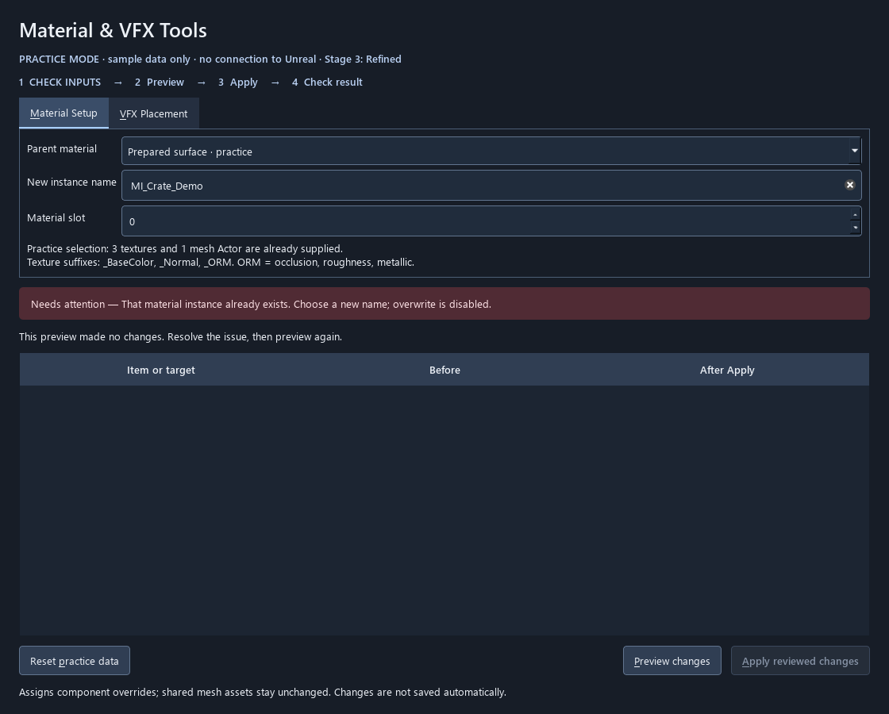
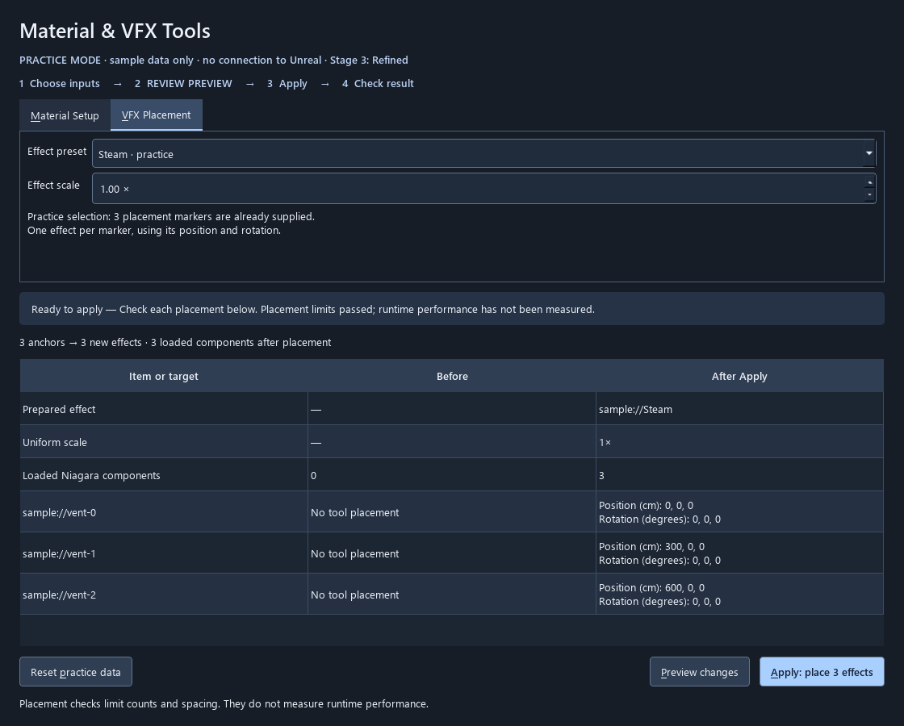
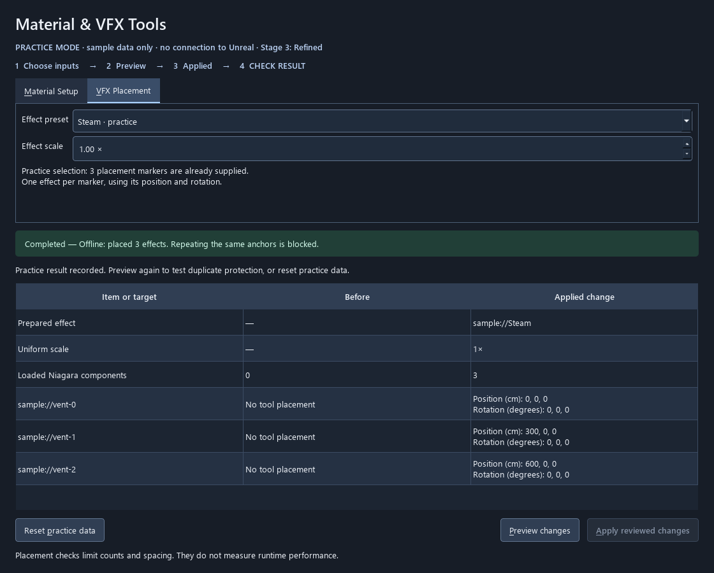
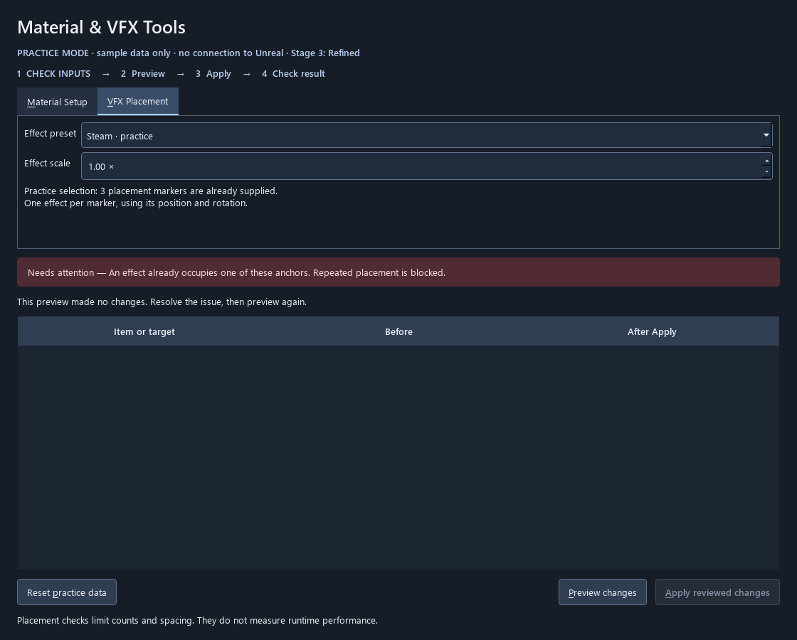

My tool demo: Material & VFX Tools
Default classroom route: the current Stage 3 practice interface. Material Setup gets seven minutes at elapsed 19–26 (3:49–3:56 PM). After the existing two-minute interface/host explanation, VFX and recovery get four minutes at elapsed 28–32 (3:58–4:02 PM).
Keep the existing Maya/Unreal handoff in its separate seven-minute block. It still requires the instructor’s live rehearsal. This pack does not claim that bridge or the material/VFX Unreal adapter has been rehearsed.
Preflight on the teaching machine
- Open the Week07UnrealPython project. From its folder run
./.venv/Scripts/python.exe Scripts/assistants.py --stage 3, or use the existing VS Code offline assistants task. - Confirm PRACTICE MODE. Start fresh with Prepared surface, MI_Crate_Demo, slot 0 and Steam at scale 1.00. The sample supplies selection. Clicking in Unreal does not change it.
- Check projector readability and manually try Preview, Apply, duplicate rejection and Reset. Reset affects both sample workflows and retains input fields.
- Have the linked captures open before class. If launch takes more than 30 seconds, use these actual recorded UI states and describe them as captures.
Seven-minute material demonstration
| Minute | Action and exact teaching purpose |
|---|---|
| 0–1 | State the goal: one prepared surface on the crate. Ask what should change and what should remain shared. |
| 1–3 | Preview changes. Read parent, texture mapping, destination and crate slot. Expect one new instance and one component assignment. The plan has made no changes. |
| 3–4 | Apply: create 1 instance. Read Completed and Applied change rows. Apply is disabled because the plan was consumed. |
| 4–5 | Preview the same name again. Ask a student to read the duplicate-name message and propose a recovery. |
| 5–6 | Reset practice data, retain the input name, then preview again. Distinguish reset from live Undo. |
| 6–7 | Ask: “Which row proves scope? What questions remain?” Expected scope: component override, not shared mesh or parent graph. |
Four-minute VFX transfer
30 seconds: state the three-marker task. 60 seconds: preview Steam, inspect transforms and 0-to-3 count, apply and inspect rows. 30 seconds: preview again and read the duplicate block. 30 seconds: reset and explain the recovery boundary. 90 seconds: questions or recovery reserve.
“We reuse the same workflow with different rules. Three markers give three effects. These checks tell us about placement; they do not measure frame cost. What would we need to measure next?”
Fallback capture sequence
These are actual offscreen practice captures, not live Unreal evidence.
Material Preview

Material Complete

Material Blocked

Vfx Preview

Vfx Complete

Vfx Blocked

Optional code explanation, within the interface block
Trace sample inputs in workflow_sample.py, plan rules/session in workflows.py, readable output in workflow_presentation.py, and UI events in ui/assistants.py. The actual Unreal adapter is editor/workflow_backend.py. Explain one connection, without opening an additional coding lesson.
Live Unreal boundary
Use the live route only after the project’s presentation checklist passes with real presets, assignments, placed Actors, stale selections, failure cleanup and recovery. Reset practice data does not exist in the live tool. Neither live workflow automatically saves. Component assignment Undo and cleanup of a newly created material asset are separate checks.
Live acceptance checklist · Current tool’s canonical demo sequence